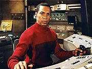
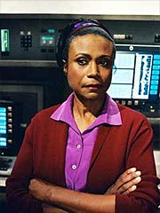
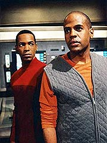
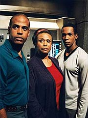

|
MANCHETE
DO EPISDIO
Drama
familiar oferece uma 'alma'
para o sumido Travis Mayweather
Episdio
anterior | Prximo
episdio
Sinopse:
A Enterprise ordenada a investigar um espetacular fenmeno planetrio, em que a migrao de um astro est provocando intensa atividade vulcnica em sua superfcie. Aproveitando a oportunidade gerada pela volta temporria da Enterprise a territrio j familiar, Travis Mayweather pede autorizao para uma pequena licena, j que a nave de sua famlia, a ECS Horizon, estaria naquelas redondezas. Levando em conta que o pai do alferes est muito doente, Archer no hesita em conceder.
Antes mesmo de Mayweather ir a bordo, entretanto, ele recebe ms notcias pelo canal subespacial -- seu pai falecera. A notcia havia sido despachada tempos atrs, mas, graas lentido dos servios civis de comunicao, s agora chegava Enterprise. Travis est especialmente abalado pelo fato de no ter tido a chance de se reconciliar com seu pai, que havia rompido com ele desde o momento em que o alferes decidiu entrar para a Frota Estelar.
Archer revela que, apesar da rusga, o pai de Mayweather tinha profunda admirao pelo filho. Travis no acredita muito, at o capito contar que recebeu uma mensagem de recomendao do pai dele quando ainda estava por decidir quem chamaria para piloto da Enterprise. Um pouco mais consolado, Mayweather finalmente vai Horizon, enquanto Archer e cia. partem para investigar o fenmeno astronmico.
 Em sua antiga nave, Travis recebido por sua me Rianna. Ela conta que as coisas esto caminhando e que Paul, irmo mais novo de Mayweather, assumiu o comando da nave aps a morte do pai. Travis tem a chance de se hospedar em seus antigos aposentos e fica feliz em rever o irmo, embora Paul no parea muito contente ou particularmente orgulhoso dele.
Ansioso por ser til, Travis comea a conduzir algumas atualizaes nos sistemas da Horizon, mas hostilizado por Paul, que despreza todo e qualquer conhecimento que tenha vindo da Frota Estelar. Apesar disso, o alferes insiste em conduzir as melhorias, o que o leva a um forte conflito com o irmo. Ciente das dificuldades a bordo com o novo capito, Travis comenta com sua me que talvez devesse abandonar a Frota e ficar com a Horizon, mas dissuadido.
Tudo isso acaba indo para segundo plano, entretanto, quando a Horizon vtima de um ataque. A nave mal consegue se defender e se torna um alvo fcil, depois que os inimigos conseguem plantar uma bia sinalizadora numa das naceles da nave. Por conta disso, os tripulantes logo identificam os atacantes como os mesmos que j haviam pilhado outros cargueiros recentemente. Seu procedimento era mandar uma nave pequena para "marcar" o inimigo e, depois, uma nave maior viria rend-los e roubar-lhes a carga.
 Um explosivo impedia a extrao da bia sinalizadora do casco, e Paul decidiu que a melhor opo seria entrar em dobra mxima e atingir o sistema Deneva, destino da carga, antes que pudesse ser abordada pela outra nave. Travis, entretanto, pensa diferente. Pela configurao da nave inimiga, ele acha que seria possvel desabilitar seus motores com algumas modificaes aos canhes laser. Paul est decidido a evitar uma luta, mas Travis insiste e, a despeito das ordens, comea a realizar as modificaes necessrias. Paul entra num confronto final com seu irmo e ordena que ele pare de modificar os sistemas, mas Travis se recusa.
Ao final das contas, as aes do alferes acabam se mostrando cruciais. Os inimigos no parecem dispostos a negociar e querem levar no s a carga, mas tambm a prpria nave. Diante da necessidade de um combate, Paul instrui Travis a colocar suas modificaes em operao e consegue desabilitar a nave pirata. Finalmente os dois irmos conseguem se reconciliar, justo quando j hora de Travis voltar Enterprise, que realizou com sucesso sua misso cientfica.
Comentrios:
"Horizon" uma surpresa agradvel por duas razes. Em primeiro lugar, aposta num personagem pouqussimo explorado na srie at este momento, o normalmente figurante Travis Mayweather. Em segundo lugar, mostra que no preciso premissas estramblicas para conduzir uma boa histria.
Em outras palavras, fica comprovado que Enterprise pode ter uma "alma", se assim o quiser e se for capaz de apostar na capacidade de seus personagens de conduzir uma boa histria.
 Desde "Fortunate
Son", os telespectadores aguardavam mais sobre o modo de vida dos cargueiros terrestres, como o ECS Horizon, em que Mayweather nasceu e viveu sua infncia e adolescncia. Aqui eles tm uma excelente oportunidade. No s temos uma chance de passar "alguns dias" a bordo, como pegamos um momento de crise e de transio na nave.
Adicionalmente, o episdio oferece uma tragdia pessoal para Travis, e com ela a chance de mostrar mais sua personalidade audincia. E, diferentemente de
"Fortunate Son", em que o piloto acaba desperdiando a oportunidade de se fazer interessante, aqui sua apario parece muito mais realista, centrada e suportada por um propsito.
basicamente uma histria humana, e quem tem irmos pode se identificar facilmente com ela (falo por experincia prpria), o que torna o episdio ainda mais interessante. Mas no pr-requisito ter um irmo ou irm para entender o que se passa por aqui. Os elementos so todos bastante familiares e simples, o que nos deixa com a tarefa de apenas observar como Travis lida com essa situao.
O tema de antagonismo entre os cargueiros e a Frota Estelar volta a aflorar, desta vez fortalecido pelo aspecto pessoal da disputa entre Travis e seu irmo Paul, recm-colocado no comando da Horizon aps a morte do pai dos dois.
O segmento tambm uma boa oportunidade para vermos o que Travis andou aprendendo a bordo da Enterprise, e o quanto ele privilegiado por estar na misso. E, por incrvel que parea, o episdio serve igualmente para reforar sua posio na NX-01. O dilogo final entre ele e Archer demonstra o senso de famlia que comea a ser criado a bordo, fazendo um paralelo com um dilogo semelhante, ocorrido entre Travis e sua me na Horizon.
 Pontos negativos so o uso mais uma vez da velha desculpa dos piratas espaciais, mote que j alimentou a outra trama a envolver os cargueiros terrestres, em
"Fortunate Son", e a aparente inverossimilhana de a Enterprise, aps dois anos de viagem, estar to perto do lento transporte comercial da famlia de Mayweather.
Os efeitos especiais cumprem seu papel, mas no consistem no grande destaque do episdio. O forte aqui, felizmente, o corao -- algo que no acontece com muita frequncia em
Enterprise. Andre Bormanis acertou em cheio o tom no roteiro e temos certamente o episdio mais forte de Travis Mayweather at agora, e um bom segmento desta segunda temporada. Longe de uma obra-prima, mas agradvel e sensvel. Uma boa pedida.
Citaes:
Mayweather - "Starfleet should think of letting families on board starships."
("A Frota Estelar deveria pensar em permitir famlias a bordo de naves estelares.")
Reed - "You must be joking!"
("Voc s pode estar brincando!")
Mayweather - "No one would ever get homesick."
("Ningum nunca teria saudades de casa.")
Reed - "Yes? Well, they had better post a psychologist on board because Id need one if my parents were roaming the corridors."
("Ah ? Bem, melhor que eles coloquem um psiclogo a bordo, porque eu precisaria de um se meus pais estivessem andando pelos corredores.")
Nora - "Columbus, Magellan, Travis Mayweather."
("Colombo, Magalhes, Travis Mayweather.")
Trivia:
 O episdio marca as primeiras aparies de alguns dos familiares de Mayweather -- sua me, Rianna, e seu irmo, Paul.
O episdio marca as primeiras aparies de alguns dos familiares de Mayweather -- sua me, Rianna, e seu irmo, Paul.
As filmagens principais de "Horizon" ocorreram de 28 de janeiro a 5 de fevereiro de 2003. O episdio marca o retorno do 'sweet spot', em que a gravidade da nave se inverte, visto apenas no piloto
"Broken Bow".
Vrios dos personagens ganharam outros nomes na verso final do roteiro. Inicialmente, Rianna era chamada Sarah, Nora era Laurie, e Juan era Daniel.
Nicole Forester interpretou uma garota do Dabo em "Distant
Voices", de Deep Space Nine.
Rick Berman: "Um episdio bastante tocante que lida em parte com Mayweather voltando nave dos seus pais e com uma tragdia familiar."
Ficha
tcnica:
Escrito por Andre Bormanis
Direo de James A. Contner
Exibido em 16/04/2003
Produo:
046
Elenco:
Scott
Bakula como Jonathan Archer
Jolene Blalock como
T'Pol
John Billingsley
como Phlox
Anthony Montgomery
como Travis Mayweather
Connor Trinneer como
Charlie 'Trip' Tucker III
Dominic Keating como
Malcolm Reed
Linda Park como Hoshi Sato
Elenco convidado:
Philip Anthony-Rodriguez como Juan
Ken Feinberg como capito aliengena
Nicole Forester como Nora
Corey Mendell Parker como Paul
Adam Paul como Nichols
Joan Pringle como Rianna
Episdio
anterior | Prximo
episdio
|